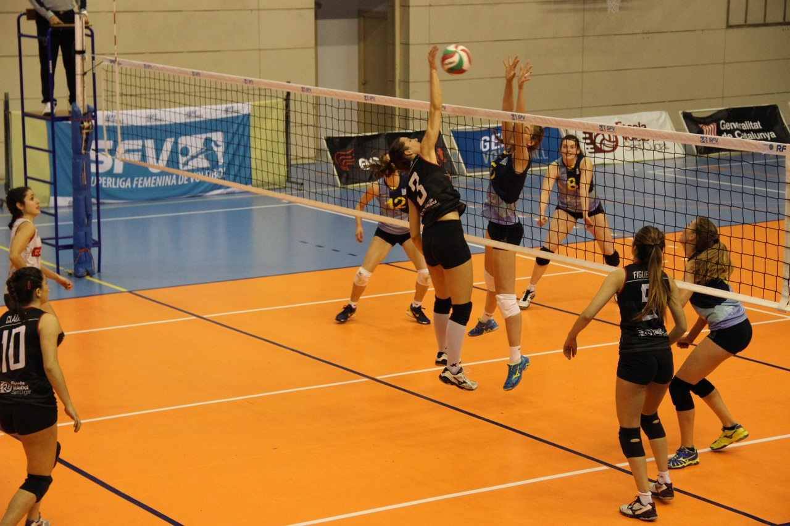
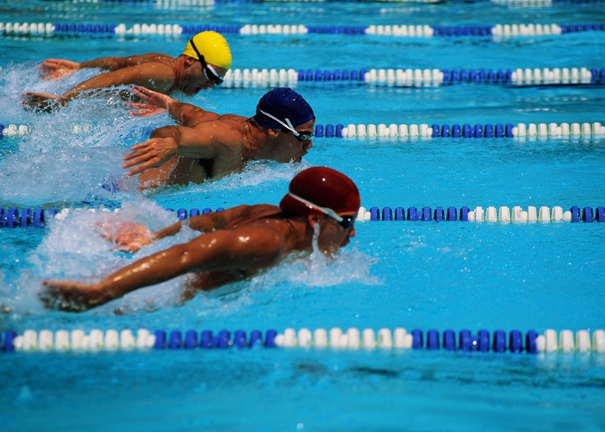

El voleibol, vóleibol, volibol, vólibol, balonvolea o simplemente vóley (del inglés volleyball)1 es un deporte que se juega con una pelota y en el que dos equipos, integrados por seis jugadores cada uno, se enfrentan sobre un área de juego separada por una red central. El objetivo del juego es pasar el balón por encima de la red, logrando que llegue al suelo del campo contrario mientras el equipo adversario intenta impedir simultáneamente que lo consiga, forzándolo a errar en su intento. Surge una fase de ataque en un equipo cuando intenta que el balón toque el suelo del campo contrario mientras que en el otro equipo surge una fase de defensa intentando impedirlo.
La natación es el y el desplazamiento a través del agua mediante el uso de las extremidades corporales y por lo general sin utilizar ningún instrumento o apoyo para avanzar. La natación es consistentemente una de las principales actividades recreativas públicas,1234 y en algunos países las lecciones de natación son una parte obligatoria del currículo educativo.5 Como un deporte formal, la natación tiene competencias locales, nacionales e internacionales. Los Juegos Olímpicos son los más importantes, donde la natación es una disciplina acompañada de un comportamiento adecuado.